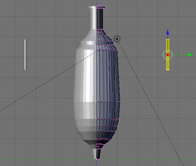
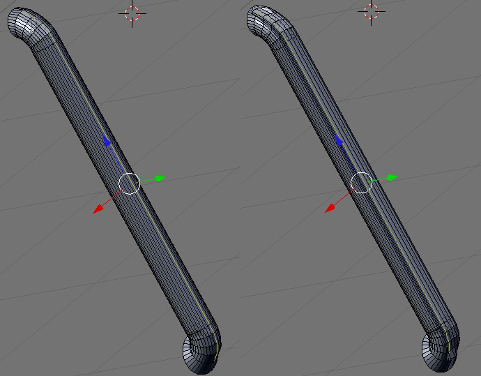

Blender Beginner for Beginner Tutorial: Amphora
16th August 2009 - Blender 2.47
Having read a few more chapters of my blender book, it is time to try another historical model (my first was a sculpture in Tozeur). Most Roman archaeological sites include a few amphora displayed behind glass. At Pompeii they just stack them up all over the place. This tutorial details the steps I used in modelling an amphora based on photos from Pompeii. Below is one of these photos next to the results of my modelling.
-
Create a circle (SPACE key, choosing Add -\> Mesh -\> Circle) and set it
in the Z/X plane (this will make later steps easier). The radius is
unimportant, we just want the linked vertices. Edit the circle’s
vertices (RMB on the circle to select it, then TAB), choose a single
vertex (any vertex) and delete it.
-
Grab (G) one end of the line and move it to the origin (I did this by
selecting the point, hitting N and then editing the LocX, LocY, & LocZ
values to 0). Select the other end point and put it 0.5 above the first
(LocZ is 0.5).
-
Next grab each point in between the endpoints and position them into the
outline of an amphora. Imagine cutting an amphora in half and then in
half again - try creating the outline you would see looking at a
cross-section of the amphora. This can be quite time consuming to get
right, so here is a blend of the
outline shown below.
-
Select all the vertices in the outline (keep pressing the A key until
all vertices are yellow). Move the cursor to the origin with SHIFT-C.
Shift to top view with NUMPAD7.
-
Press the spin button on the Editing panel (F9) with the settings Degr
180, Steps 20, Turns 1. This will spin the outline 180 degrees around
the Z axis based on the origin (the origin because that is where the
cursor is located, and the Z axis because we are viewing the scene in
top view where the Z axis is hidden). If there is a problem and Blender
refuses to spin the outline, then try closing 3D views until there is
just one - sometimes Blender has trouble determing in which view to
perform the spin). The image below shows the spin settings on the left
and the resultant spin on the right.
-
Go out of edit mode (TAB) then add a mirror modifier on the Modifiers
subpanel of the Editing panel (F9). To do this click the “Add Modifier”
button and choose mirror. Make sure the mirror is only in the Z axis and
turn on clipping by pressing the “Do Clipping” button. With this
modifier we now have the complete body of the amphora, but any changes
we make to one side will be mirrored on the other. Thus when we add a
handle to one side it will automatically appear on the other - saving
time!.
-
Go to side view (NUMPAD3) and back into edit mode (TAB), so half of the
view is editable and half is the mirror. Add a cylinder (SPACE key,
choosing Add -\> Mesh -\> Cylinder) length 1.3, radius 0.07 with
uncapped ends. Position the cylinder off to one side of the amphora (you
may need to rotate it too). Go into edge select model with CTRL-TAB 3.
 -
Extend one end of the cylinder and curve it by extruding (E KEY) one end
of the cylinder a little bit and then rotating it towards the amphora.
It is easiest to select the end of the cylinder using edge loop select -
RMB on one edge of the end while the ALT key is pressed and the whole
circle of edges should be selected.
-
Repeat the previous step until the end of the is perpendicular to the
main body, do the same at the other end too.
-
Select the lengthwise edge loop furthest from the body of the amphora.
Deselect the top and bottom couple of edges from the loop. Turn on
Connected Proportional Editing (ALT-O) and move the edge in the Y-axis
(G then Y) towards the amphora. This should make a groove in the
cylinder. If the groove is too big or the whole cyclinder moves,
decrease the power of the Proportional Editing using the PAGEDOWN key.
The power is displayed by the size of the circle around the selected
edges, for me the power was correct when this circle’s diameter was
slighter less than the diameter of the cylinder. Make sure the shifted
edges to not cross the non shifted edges or the handles will look a
little weird. When finished turn off Proportional Editing with the O
KEY. The image on the left below is the cylinder with the edges
selected, and the right image is the cylinder with the groove.
 -
At this point you may like to scale the cylinder to make a better
looking handle. I scaled mine to make it wider and flatter (S then X
keys). Move the cylinder/handle into the amphora until the bottom merges
into the amphora at an appropriate point. Check that it meges in all
directions. Select the top edge loop of the handle and extrude it until
it too merges with the amphora.
- TAB out of edit mode and set the entire object smooth, go to the Editing panel (F9) and on the Mesh subpanel click the “Auto Smooth” button and set the Degr spinner to 60. This means that angles of less than 60 degrees will be smoothed, while the remainder stay sharp.
-
Assign a new material to the whole amphora. On the “Link and Materials”
subpanel of the Editing panel click the “New” material button.
-
On the Material subpanel of the Editing panel set the base colour of the
material to Red 0.8, Green 0.4, and Blue 0.2 - a terracotta colour. On
the Shadow subpanel set the Spec value to 0. This is the specular
reflection, the concentrated point of light reflected from a light
source, terracotta doesn’t have this so it is turned off. Similarly,
terracotta doesn’t reflect much light in general so set the Ref value to
0.55.
-
On the Textures panel add 3 new textures: a Marble texture call Bands,
this will be the feint colour bands in the amphora; a Clouds texture
called Bumps, which will be the small grain of the material; and another
Clouds texture also called Bumps which will be the slighly larger bumps
in the material. Set up the textures as shown below (it is worth just
playing with the parameters to see how they affect the material).
-
On the Textures subpanel of Materials panel select the Bands texture. On
the “Map Input” subpanel, this texture should repeat going up the
amphora, so set the texture to wrap around it by pressing the Tube
button and set the SizeX and SizeZ values to 0 and the sizeY value to
10. The Bands only affect the colouring, so on the “Map To” subpanel
ensure on the Col button is pressed and set the colour to Red 0.66,
Green, 0.334, Blue 0.183 - a slightly darker colour.
- For the small bumps on the “Map Input” subpanel set the Tube button, SizeX and SizeY to 5 with SizeZ set to 1. On the “Map To” subpanel set the texture to affect colour and normals (the Col and Nor buttons) set the colour to R=0.83, G=0.38 and B=0.18 and the Nor to 0.6.
- For the large bumps on the “Map Input” subpanel set the Tube button, SizeX, SizeY and SizeZ set to 5. On the “Map To” subpanel set the texture to affect just normals.
And it is complete! You can download my amphora blend file here.

Amphora
Blender Model by
Charles
Cordingley is licensed under a
Creative
Commons Attribution 2.0 UK: England & Wales License.